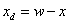
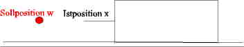
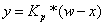
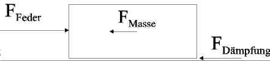
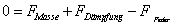
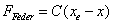
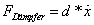
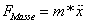
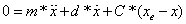
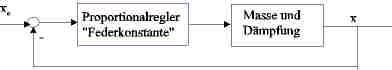

Einführungsbeispiel für einen Regler
Im folgenden Beispiel soll eine Masse an einen Punkt gebracht oder gehalten werden (Abbildung 1). Die Regelabweichung (xd) zwischen Ist-(x) und Sollposition (w) soll Null werden.


Abbildung
Zur Lösung dieser Aufgabe bedient man sich eines Motors. Die Kraft des Motors wird gesteuert. Die Istpsoition wird mit einem Glasmasstab ermittelt. Die Kraft ergibt sich aus einem Proportionalregler

Bei
einer Feder ist die Abweichung aus der Ruhelage proportional zu der
Kraft, die die Feder wieder in Ruhelage bringen soll. Die Feder wirkt
wie ein Proportionalregler. In der Auswahl des Applets kann man die
Anregung einstellen. Die Feder wird durch einen Motor ersetzt. In dem
Applet ist noch die Feder eingezeichnet anstelle des Motors. Die
„Federkonstante“ kann verändert werden. In der
Editierbox kann die Länge der Signale eingestellt werden. Mit
dem Übernehmenbutton werden die Werte übernommen. Auf Seite
wird die Amregimgsfunktion blau eingezeichnet. Die Linie mit der
Istposition ist rot. Je höher der Proportionalwert, desto
steifer das System. Es soll ein Kompromis zwischen Dämpfung und
schnellem Führungsverhalten gefunden werden.
Das Kräftegleichgewicht ergibt sich:






